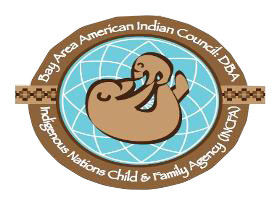
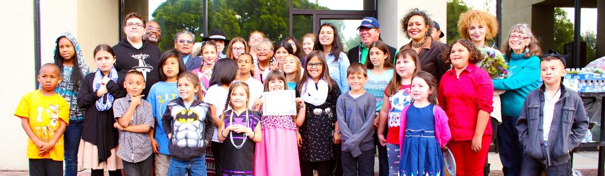

Welcome to Title VII Indian Education Program

The Title VII Indian Education Program is aimed at providing a variety of supportive services to help American Indian children reach their full potential in school.
The program serves four local school districts: San Leandro, San Lorenzo, Hayward, and the Alameda County Office of Education alternative programs.
The program has two main components:
- Academic support, including school readiness and college preparation
Cultural enrichment through native American Studies
The academic program provides homework help and tutoring in math and language arts from grades K-12 with small group instruction throughout the school year.
In addition, there is a threeweek summer enrichment program.
- The cultural program is aimed at strengthening the children's Native American identity and sense of belonging to a supportive community.
It focuses on traditional Native American activities such as Native crafts,
dancing, drumming, traditional values, storytelling, cultural mentoring, field trips, and much more.
Visit the Bay Area American Indian Council, DBA, Indigenous Nations Child and Family Agency!
Created by Felipe Can Copyright 2016
EDUI 6240: Math, Science, and Educational Technology Winter Quarter CSUEB January 2016